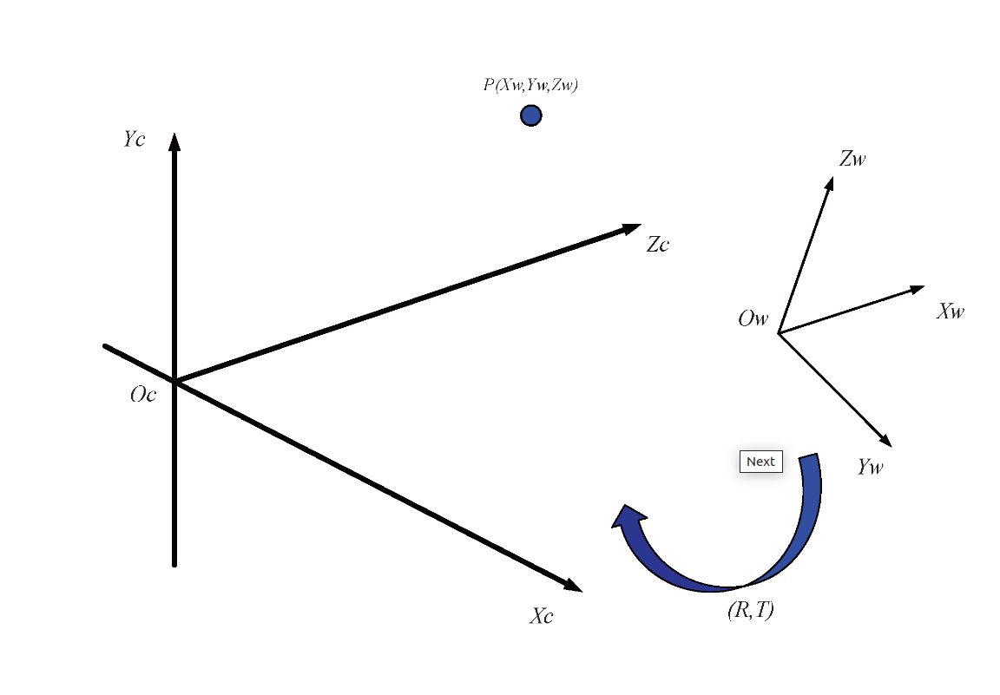

成像基础¶
1. 世界、相机、图像和像素坐标转换¶
1.1 坐标系几何关系¶

图像处理中涉及到以下四个坐标系：
\(O_w - X_wY_wZ_w\) : 世界坐标系， 描述相机位置， 单位： m
\(O_c - X_cY_cZ_c\): 相机坐标系， 光心为原点，单位： m
\(O_{xy}\): 图像坐标系，光心为图像中点，单位： mm
\(uv\): 像素坐标系，原点为图像左上角，单位: pixel
\(P\): 世界坐标系中的一点，即为生活中真实的一点；
\(p\): 点P在图像中的成像点，在图像坐标系中的坐标为\((x, y)\), 在像素坐标系中的坐标为\((u, v)\)
* \(f\)：相机焦距，等于\(o\)与\(O_c\)的距离，\(f = ||o - O_c||\)
1.2 世界、相机坐标系转换¶

从世界坐标系变换到相机坐标系属于刚体变换： 即物体不会发生形变，只需要进行旋转和平移。 \(R\): 表示旋转矩阵 \(T\): 表示平移矩阵；
\(\left[\begin{array}{c}X_c \\ Y_c \\ Z_c\end{array}\right]=R\left[\begin{array}{l}X_w \\ Y_w \\ Z_w\end{array}\right]+T\)
以齐次坐标表示： \(\left[\begin{array}{c}X_c \\ Y_c \\ Z_c \\ 1\end{array}\right]=\left[\begin{array}{cc}R_{3 \times 3} & T_{3 \times 1} \\ 0 & 1\end{array}\right]\left[\begin{array}{c}X_w \\ Y_w \\ Z_w \\ 1\end{array}\right]\)
1.3 相机、图像坐标系转换¶
从相机坐标系到图像坐标系是从3D转换到2D, 属于透视投影关系，以下是推导过程：
很明显，\(Z_c\)是空间点\(P\)的深度信息。此时，投影点\(p\)的单位还是mm， 并不是像素pixel,需要进一步转换到像素坐标系。
1.4 图像、像素坐标系转换¶
像素坐标系和图像坐标系都在成像平面上，只是各自的原点和度量单位不一样。 - 图像坐标系的原点为相机光轴与成像平面的交点，通常情况下是成像平面的中心。图像坐标系的单位是mm, 是物理单位，是连续的； - 像素坐标系的原点为左上角，单位Pixel，是离散的； 两者之间的转换关系如下:

\(\begin{aligned} & u=\frac{x}{d x}+u_0 \\ & v=\frac{y}{d y}+v_0\end{aligned}\)
其中，\(dx\)，\(dy\)，代表了每个像素的实际世界中的物理距离，当然这是相机的固有参数；
图像坐标系与像素坐标系之间涉及两点： 度量单位和坐标系原点的转换
以齐次坐标形式表示为：
最后总结为： $$ \begin{aligned} Z_c \left[ \begin{array}{c} u \ v \ 1 \end{array} \right] &= \left[ \begin{array}{ccc} \frac{1}{d_x} & 0 & u_0 \ 0 & \frac{1}{d_y} & v_0 \ 0 & 0 & 1 \end{array} \right] \left[ \begin{array}{ccc} f & 0 & 0 \ 0 & f & 0 \ 0 & 0 & 1 \end{array} \right] \left[ \begin{array}{cc} R_{3 \times 3} & T_{3 \times 1} \ 0 & 1 \end{array} \right] \left[ \begin{array}{c} X_w \ Y_w \ Z_w \ 1 \end{array} \right] \ &= \left[ \begin{array}{ccc} f_x & 0 & u_0 \ 0 & f_y & v_0 \ 0 & 0 & 1 \end{array} \right] \left[ \begin{array}{cc} R_{3 \times 3} & T_{3 \times 1} \ 0 & 1 \end{array} \right] \left[ \begin{array}{c} X_w \ Y_w \ Z_w \ 1 \end{array} \right] \end{aligned} $$ 前者为相机内参， 后者为相机外参
\(Z_c\)是深度信息，空间中的一个坐标点，可以在图像中找到一个对应的像素点，但是，通过图像中的一个点找到它在空间中对应的点很难，因为\(Z_c\)深度信息未知。
Note
\(f_x\), \(f_y\) 是相机内参中的两个参数，但并不具备物理含义，只是认为定义的
2. 视场角¶
视场角（FOV）是指相机（或人眼、镜头）能“看到”的空间角度范围。
对于透视投影系统（针孔相机模型）：
还可以求解未知参数
- 已知焦距和传感器尺寸，求解视场角
- 已知焦距和视场角，求解传感器尺寸
- 已知视场角和传感器尺寸，求解焦距
可以看到：焦距越短 → 看得越“广”；传感器越大 → 也越“广”
2.1 视场角计算¶
- 物理尺寸计算
- 相机内参计算
| Python | |
|---|---|
1 2 3 4 5 6 7 8 9 10 11 12 13 14 15 16 | |
3. 物理焦距与像素焦距¶
像素焦距 fx :
其中：
-
\(f_{\text{mm}}\)：物理焦距（单位：mm）
-
\(Sensor_{\text{mm}}\)：传感器的实际物理宽度（单位：mm）
-
\(w_{\text{px}}\)：图像宽度（单位：像素）
4. 分辨率影响¶
假如切换摄像头的输出分辨率，sensor的物理尺寸，镜头的焦距，视场角都不会改变，相机的内参（尤其是 fx、fy、cx、cy）会进行规律性的变化
| Python | |
|---|---|
1 2 3 4 5 6 7 8 | |
5. 感光面积¶
感光面积 = 图像传感器的物理尺寸
- 它是 CMOS/CCD 图像传感器中实际感光的区域大小。
- 通常单位是英寸，如 1/2.3"、1/2.5"、1/1.8"、1" 等（注意：这是“类比单位”，不是实实在在的英寸）。
- 对应真实的宽度×高度，比如：
| 标称尺寸 | 对角线（约） | 实际感光尺寸（W × H） | 感光面积（约） |
|---|---|---|---|
| 1/3" | 6.0 mm | 4.8 mm × 3.6 mm | 17.3 mm² |
| 1/2.9" | 6.2 mm | 5.0 mm × 3.7 mm | 18.5 mm² |
| 1/2.8" | 6.4 mm | 5.35 mm × 3.0 mm | 19.6 mm² |
| 1/2.7" | 6.6 mm | 5.37 mm × 4.04 mm | ≈ 21.7 mm² |
| 1/2.5" | 7.2 mm | 5.76 mm × 4.29 mm | ≈ 24.7 mm² |
| 1/2.3" | 7.7 mm | 6.3 mm × 4.7 mm | ≈ 29.6 mm² |
| 1/1.8" | 9.0 mm | 7.2 mm × 5.4 mm | ≈ 38.9 mm² |
| 1/1.7" | 9.5 mm | 7.6 mm × 5.7 mm | ≈ 43.3 mm² |
| 1" | 16.0 mm | 12.8 mm × 9.6 mm | ≈ 122.9 mm² |
大多数情况下，像素是规则均匀排列在感光面积上的,每个像素占据感光器件上的一个“微小区域”，这就是所谓的 “单位像素尺寸”，比如 1.4μm × 1.4μm；感光面积 = 像素总数 × 单个像素面积（大致可这么估算）。
| 场景 | 感光面积 | 像素数 | 单个像素面积 | 意味着什么 |
|---|---|---|---|---|
| A: 小底 + 高像素 | 小 | 多 | 小 | 像素密集，但进光少，易噪声 |
| B: 大底 + 低像素 | 大 | 少 | 大 | 每个像素进光多，低照表现好 |
| C: 大底 + 高像素 | 大 | 多 | 适中 | 兼顾分辨率和感光能力，但成本高 |
镜头的“感光面积”
其实说的是镜头的“成像圈直径”，也叫光学像场大小：
- 每颗镜头都有一个最大投影图像圈，单位也是 mm；
- 一般镜头的“感光面积” ≥ 传感器的感光对角线，否则图像边缘会“黑边”、“暗角”。
镜头和传感器的适配关系
| 镜头成像圈 vs 传感器感光面积 | 适配效果 |
|---|---|
| ✅ 镜头像圈 ≥ 感光面积 | 正常，画面不裁剪无暗角 |
| ⚠️ 镜头像圈 < 感光面积 | 黑边、暗角、图像变形（严重不匹配） |
| 🔄 镜头像圈 ≫ 感光面积 | 画面裁剪，视角变小，相当于“放大”效果（等效焦距变长） |